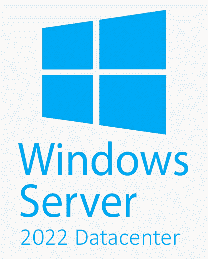

Мережеві протоколи Налаштування основних мережевих протоколів, таких як TCP/IP, для забезпечення надійного та ефективного з'єднання на рівні служб.
Огляд основних серверних ОС
Windows Server

Надійна та масштабована серверна ОС від Microsoft, оптимізована для управління мережевими ресурсами та послугами в корпоративному середовищі.
Linux

Потужна, безкоштовна та відкрита серверна платформа з великою екосистемою дистрибутивів, ідеально підходить для широкого спектру завдань.
macOS Server
Спеціалізована серверна версія macOS від Apple, оптимізована для інтеграції з іншими продуктами компанії та середовищами на базі Mac.
Unix

Високоякісні, масштабовані та надійні серверні ОС, такі як Solaris, AIX та HP-UX, поширені в корпоративних ІТ-середовищах.
Встановлення та налаштування серверної ОС

Вибір операційної системи
Ретельно оцініть потреби вашої організації та виберіть найбільш підходящу серверну ОС, зважаючи на функціональність, сумісність, вартість та вимоги до обладнання.
Встановлення системи
Виконайте чітке поетапне встановлення серверної ОС, слідуючи інструкціям виробника та враховуючи специфіку апаратного забезпечення.
Базове налаштування
Налаштуйте основні параметри ОС, такі як мережеві з'єднання, служби каталогів, системи безпеки та моніторингу, щоб забезпечити надійну та ефективну роботу серверу.
Управління користувачами та правами доступу
Облік користувачів Вести детальний облік усіх облікових записів користувачів, їхніх ролей та прав доступу на сервері.
Політика безпеки Впровадити чітку політику безпеки для регулювання доступу до системних ресурсів та конфіденційної інформації.
Групові права доступу Призначати права доступу на основі груп користувачів, а не окремих облікових записів, для спрощення управління.
Моніторинг активності Відстежувати та аналізувати журнали подій для виявлення підозрілої активності та порушень політики безпеки.
Конфігурація мережевих служб
1
2
Файлові служби Встановлення та налаштування файлових служб, що дозволяють користувачам безпечно зберігати та обмінюватися даними.
3
Веб-сервери Розгортання та конфігурація веб-серверів для публікації сайтів та веб-додатків в мережі.

Забезпечення безпеки та резервне копіювання
Комплексний підхід до безпеки
Впровадити багаторівневу систему безпеки, що включає захист від вірусів, брендмауери, шифрування даних та системи виявлення вторгнень.
Регулярне резервне копіювання
Налаштувати автоматичне резервне копіювання критичних даних, застосовуючи різні стратегії для забезпечення надійного відновлення в разі збоїв.
Аварійне відновлення
Створити чіткий план аварійного відновлення, щоб швидко реагувати на непередбачені ситуації та відновлювати працездатність системи.
Моніторинг та оптимізація продуктивності
Ефективне управління серверною операційною системою неможливе без постійного моніторингу та оптимізації її продуктивності. Це дозволяє виявляти вузькі місця, усувати проблеми та забезпечувати стабільну та високопродуктивну роботу всіх сервісів.
| Моніторинг системних ресурсів | Відстежуйте завантаження процесора, пам'яті, диску та мережі, щоб вчасно виявляти та усувати проблемні ділянки. |
| Аналіз журналів подій | Регулярно аналізуйте системні журнали, щоб ідентифікувати помилки, попередити потенційні проблеми та вдосконалити конфігурацію. |
| Оптимізація налаштувань | Налаштовуйте параметри ОС, служб та додатків для досягнення максимальної продуктивності з урахуванням специфіки завдань та обладнання. |
| Балансування навантаження | Застосовуйте механізми балансування навантаження для розподілу робочого навантаження між серверами та запобігання перевантаження. |